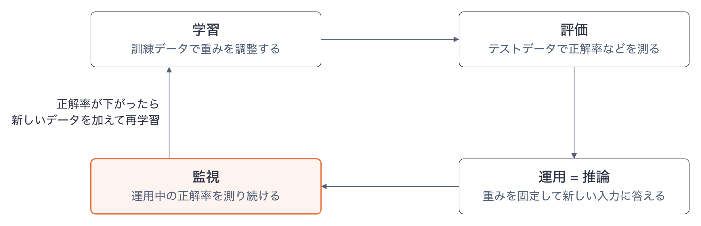
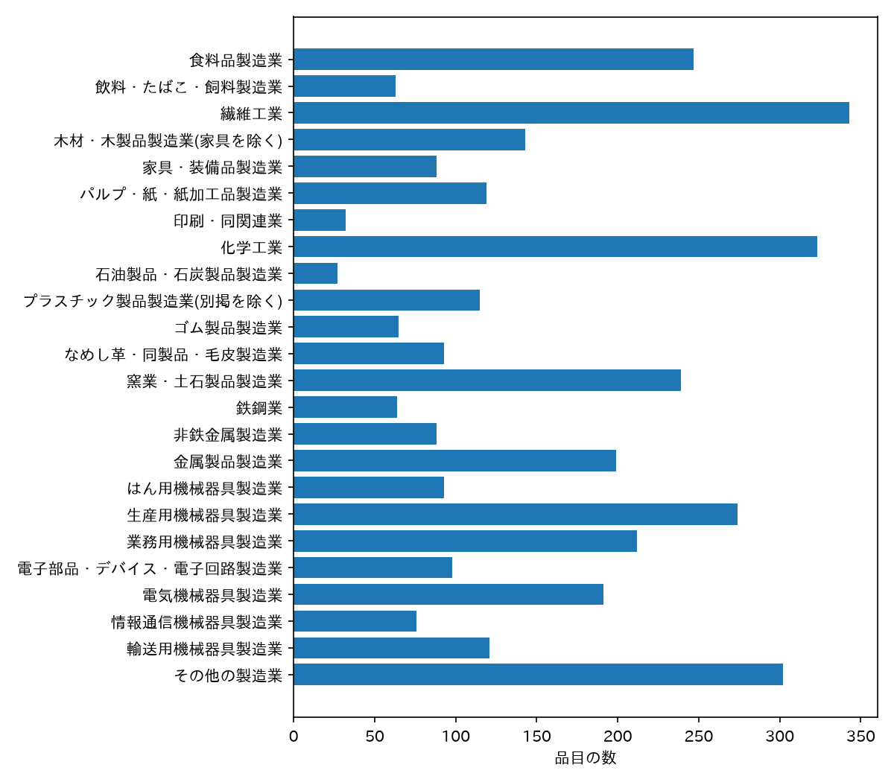
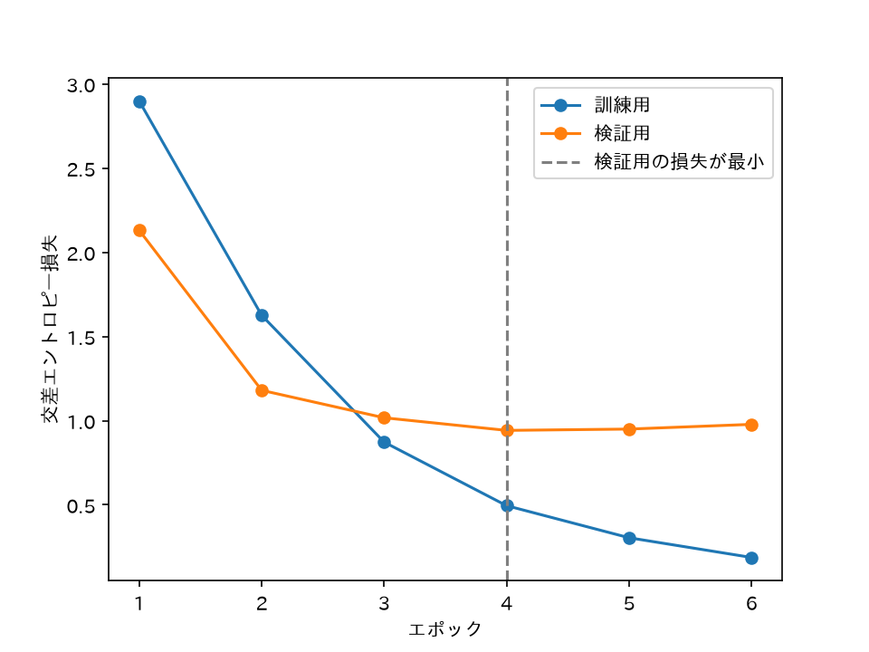
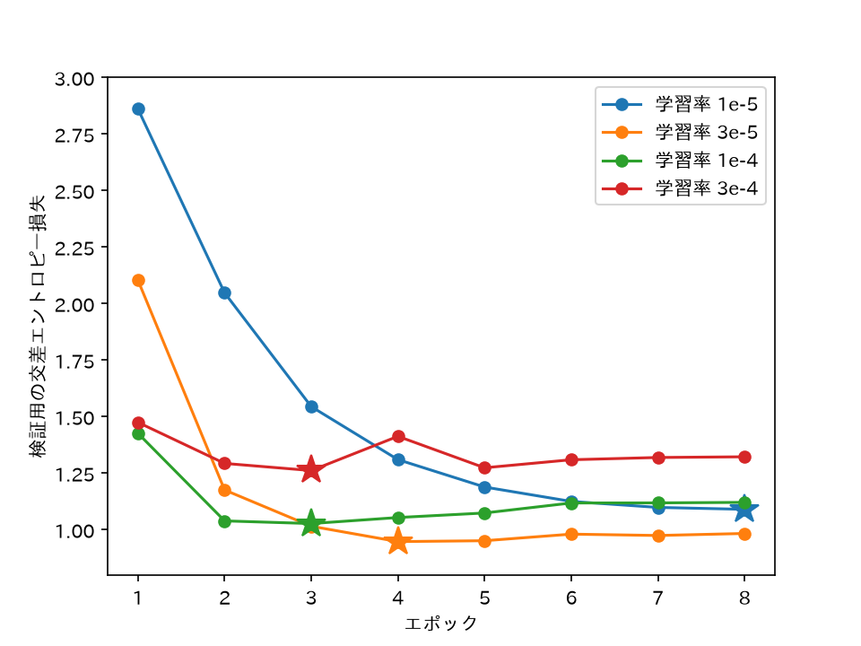

データサイエンス実践 Ch10 Transformer の学習
資料
この章は作成中です. 書き終えているのはAI の学習と推論, 評価, 再学習と事例: 品目名から製造業の中分類を当てるの 2 つの節です. Transformer の学習の手順と事例: 自然言語の Transformer を学習するの節は, 見出しと扱う内容の予定だけを載せています.
本章のうちAI の学習と推論, 評価, 再学習の節は, 第 8 回の授業で第8章とあわせて扱います. この節は第8章までの内容で読めます. それ以外の節は授業では扱いません (発展).
本章は, Transformer を学習する過程を扱う章です. 第8章では Transformer の仕組みを, 第9章では事前学習済みの BERT を使う方法を扱い, 学習の中身は扱いませんでした. 本章では, 学習と推論の区別と, 学習したモデルの評価と再学習を説明したうえで, Transformer を学習する手順を実装して実行します. 学習の手順の事例には自然言語 (文章) を使います. 最初の事例は, 製品の名前 (品目名) から, その製品を作る産業の分類を当てる多クラス分類です. 第9章の BERT を追加学習し, 学習率の選び方, 損失の推移の監視, 学習を止める時期の決め方を, 実際に学習を走らせて確かめます. 画像を扱う Vision Transformer (第11章) も, 入力をトークンの並びにする方法と学習で解かせる問題が違うだけで, 学習率の決め方や学習の監視の手順は共通です.
前提となる章
- 第8章: ニューラルネットワークの学習 (損失関数, 勾配降下法, 学習率, エポック, ミニバッチ), 自己注意と Transformer の構成, 自己教師あり学習 (マスク予測と次トークン予測).
- 第9章: ニューラル言語モデルとしての BERT, 事前学習とファインチューニングの区別, マルチラベル分類でのファインチューニング. 発展の節の生成 AI の仕組み: 事前学習と生成は, 本章で学習する対象の全体像にあたります.
- 第6章: 訓練データとテストデータの分け方と過学習. 学習の途中経過の見方に使います.
AI の学習と推論, 評価, 再学習
ニューラルネットワークの重みをデータから決める作業を学習, 学習が終わったモデルで新しい入力に答えることを推論 (inference) といいます. 第8章で例にした手書き数字の認識なら, 学習はたくさんの数字の画像と正解から重みを決める作業, 推論は学習済みのモデルに新しい数字の画像を入れて「これは 7」と答えさせる作業です.
| 学習 | 推論 | |
|---|---|---|
| 目的 | 重みを決める | 新しい入力に答える |
| 使うデータ | 正解付きの訓練データ | 正解の分からない新しい入力 |
| 重み | 更新する | 固定したまま使う |
| 計算 | 順伝播, 損失の計算, 逆伝播, 重みの更新を繰り返す | 順伝播を 1 回 |
| 計算量 | 大きい (大規模なモデルでは多数の GPU で数週間以上) | 小さい (1 回の入力ごとに順伝播だけ) |
推論では重みを固定しているので, 学習の後に起きたことはモデルに反映されません. 対話型の生成 AI が, 検索などの外部の仕組みを使わない限り, 学習に使ったデータより後の出来事を知らないのはこのためです.
モデルの評価
学習したモデルを使ってよいかは, 学習に使っていないデータで確かめます. 第6章と同じく, 正解付きのデータを訓練データとテストデータに分け, 訓練データだけで学習し, テストデータで性能を測ります.
学習に使ったデータで性能を測らないのは, モデルが訓練データの細かい癖まで覚え込み, 新しいデータには通用しないことがあるからです. 訓練データでは正解率が高いのに, テストデータでは低くなる状態を, 第6章と同じく過学習といいます. テストデータは, 学習の間は一度も使わずに取っておく「初めて見る問題」の役割をします.
分類の性能は, 第6章と同じく, テストデータの正解と予測を数えた混同行列で確かめます. 正解のクラスを行, 予測したクラスを列にとり, 該当するデータの数を並べた表です. 手書き数字のうち「1」「4」「9」の 3 種類だけを分類するモデルを, テストデータ 300 枚で評価したとします.
| 正解 \ 予測 | 1 | 4 | 9 |
|---|---|---|---|
| 1 | 98 | 1 | 1 |
| 4 | 1 | 90 | 9 |
| 9 | 0 | 12 | 88 |
対角線上の数が正しく分類できた枚数です. 正解率 (全体のうち正しく分類できた割合) は次のようになります.
\text{正解率} = \frac{98 + 90 + 88}{300} = \frac{276}{300} = 0.92
正解率だけでなく表の中身を見ると, 「4」と「9」の取り違えが誤りの大部分 (24 枚中 21 枚) を占めていると分かります. 形の似た数字の区別が, このモデルの弱点です. 回帰のモデルなら, 予測と実測の差の 2 乗の平均 (第8章のニューラルネットワークの学習の平均二乗誤差 MSE) で評価します.
運用中の監視と再学習
テストデータで十分な性能を確かめたモデルも, 使い続けるうちに性能が下がることがあります. 手書き数字の例で, モデルを紙の申込書に書かれた数字で学習し, テストデータでも正解率 0.92 を確かめたとします. その後, 申込みの多くがタブレットでのペン入力に変わると, 細い線や崩れた形の数字が増えます. モデルは学習したことのない書き方の数字にも答え続けますが, 誤りが増え, 正解率が例えば 0.80 まで下がります.
このように, 運用中に入ってくるデータの傾向が学習時と変わることをデータの分布の変化 (データドリフト) といいます. 推論では重みが固定されているので, モデルが自分で新しい書き方に合わせることはありません. そこで, 次の流れで運用します.

- 監視: 運用中のデータの一部に正解を付け, 正解率を定期的に測ります.
- 再学習: 正解率が基準を下回ったら, 新しい傾向のデータ (ペン入力の数字) に正解を付けて訓練データに加え, 学習をやり直します.
- 再評価: 再学習したモデルを, 新しい傾向のデータを含むテストデータで評価し, 前のモデルより良いことを確かめてから入れ替えます.
再学習では, 事前学習済みのモデルを新しいデータでファインチューニングすることもよくあります. 大規模なモデルを最初から学習し直すより, 必要な計算がずっと少なくて済むからです.
この節に対応する演習は, 章末のExercise DSP10-1です.
事例: 品目名から製造業の中分類を当てる
企業の取引記録や製品の一覧を産業ごとに集計するには, 品目の名前 (「バター」「ピアノ線」など) を, その品目を作る産業の分類に振り分ける必要があります. 品目の数が多いと人手では振り分けきれないので, 品目名を入力にして分類を答える AI を作ります. 本節では, 第9章の日本語 BERT を追加学習 (ファインチューニング) して, 品目名から製造業の分類を当てます.
データ: 日本標準産業分類の内容例示
日本標準産業分類は, 統計を産業ごとに集計するために総務省が定めた分類です. 大分類, 中分類, 小分類, 細分類の 4 段階があり, 製造業 (大分類 E) は 24 の中分類に分かれます. 総務省は分類ごとに, その分類に含まれる事業の例 (内容例示) も公開しています. 例えば細分類「伸線業」の内容例示には, 「鉄線製造業」「ピアノ線製造業」などが並んでいます.
こちらのデータは, 製造業の内容例示から事業の名前を抜き出し, 末尾の「製造業」を落として品目名にしたものです (「バター製造業」→「バター」). 1 行が 1 品目で, 3,615 品目あります. 総務省「日本標準産業分類 (令和5年7月告示) 分類項目名, 説明及び内容例示」の製造業の資料を加工して作成しました. 総務省が作成したデータではありません. ダウンロードして, プログラムを置くディレクトリの data ディレクトリに保存してください.
| 列 | 内容 |
|---|---|
item |
品目名 |
mid_code |
中分類の番号 (09〜32) |
mid_name |
中分類の名前 |
small_code |
小分類の番号 (3 桁) |
fine_code |
細分類の番号 (4 桁) |
本節では, item から mid_name (24 クラス) を当てます. 1 つの品目は 1 つの中分類にだけ属するので, 第9章のマルチラベル分類と違い, 24 クラスから 1 つを選ぶ多クラス分類になります.
次のライブラリを使います. uv add しておいてください.
uv add torch transformers fugashi unidic-lite pandas scikit-learn matplotlib matplotlib-fontjaまず, データを読み込み, 中分類ごとの品目の数を確かめます.
import matplotlib.pyplot as plt
import matplotlib_fontja
import pandas as pd
# 番号の先頭の 0 を残すため, すべての列を文字列として読む
df = pd.read_csv('data/manufacturing_items.csv', dtype=str)
print(df.head())
print(f'品目の数: {len(df)}')
# 中分類の番号の順に, 中分類の名前を並べる
classes = df.drop_duplicates('mid_code').sort_values('mid_code')['mid_name'].tolist()
counts = df['mid_name'].value_counts()[classes]
fig, ax = plt.subplots(figsize=(8, 7))
ax.barh(classes[::-1], counts[::-1])
ax.set_xlabel('品目の数')
fig.tight_layout()
plt.show()
plt.close(fig)
"""
item mid_code mid_name small_code fine_code
0 ブロック肉 09 食料品製造業 091 0911
1 冷凍食肉 09 食料品製造業 091 0911
2 部分肉 09 食料品製造業 091 0911
3 ソーセージ 09 食料品製造業 091 0912
4 ハム 09 食料品製造業 091 0912
品目の数: 3615
"""
品目の数は中分類によって大きく違います. 最も多い繊維工業は 343 品目, 最も少ない石油製品・石炭製品製造業は 27 品目です. 第6章で見たとおり, クラスの数に偏りがあると, Accuracy だけでは少ないクラスを見逃していても気づけません. そこで, 評価では中分類ごとの Recall も確かめます.
モデル: BERT に softmax の出力層を付ける
モデルは第9章と同じ形で, BERT の出力を平均した品目名のベクトルを, 線形変換で 24 クラスのスコアに変えます. 第9章との違いは, スコアを確率に変える関数と損失関数です.
| マルチラベル分類 (第9章) | 多クラス分類 (本節) | |
|---|---|---|
| 1 つの入力に付く正解 | 0 個以上 (ネガティブとポジティブの両方もある) | ちょうど 1 個 |
| スコアを確率に変える関数 | ラベルごとに sigmoid 関数 | 24 クラスまとめて softmax 関数 |
| 確率の合計 | 決まらない (ラベルごとに 0 から 1) | 1 |
| 損失関数 | BCEWithLogitsLoss |
CrossEntropyLoss |
softmax 関数と交差エントロピー損失は, 第8章の出力層とニューラルネットワークの学習で説明したものです. PyTorch の CrossEntropyLoss は, 線形変換の出力 (スコア) を受け取り, 内部で softmax を計算してから交差エントロピーを求めます. そのため, モデル自体は softmax を通す前のスコアを返します.
学習の設定とモデルを用意します. 設定の値の意味は, 学習の手順を実行するで説明します.
import copy
import random
import time
import numpy as np
import torch
from sklearn.model_selection import train_test_split
from transformers import AutoTokenizer, BertModel, get_linear_schedule_with_warmup
# 日本語の学習済みモデル (第9章と同じ)
MODEL_NAME = 'tohoku-nlp/bert-base-japanese-whole-word-masking'
EPOCHS = 8 # 訓練データを繰り返して学習する最大の回数
PATIENCE = 2 # 検証用の損失が何エポック続けて最小を更新しなければ止めるか
MAX_LENGTH = 32 # 1 品目から読み込む最大のトークン数
LEARNING_RATE = 3e-5
WARMUP_RATIO = 0.1 # 学習率を 0 から上げていく期間 (全ステップに対する割合)
BATCH_SIZE = 32
# 使うデバイスの選択
if torch.backends.mps.is_available():
device = torch.device('mps') # Mac GPU
elif torch.cuda.is_available():
device = torch.device('cuda:0') # Win GPU
else:
device = torch.device('cpu') # CPU
print(f'Using device: {device}')
# 多クラス分類用のモデル
class BertForClassification(torch.nn.Module):
def __init__(self, model_name, num_classes):
super().__init__()
# 学習済みの BERT を読み込む
self.bert = BertModel.from_pretrained(model_name)
# BERT の出力を各クラスのスコアに変える線形変換
self.linear = torch.nn.Linear(self.bert.config.hidden_size, num_classes)
def forward(self, input_ids, attention_mask, token_type_ids=None):
output = self.bert(
input_ids=input_ids,
attention_mask=attention_mask,
token_type_ids=token_type_ids,
)
# [PAD] 以外のトークンの出力を平均して, 品目名のベクトルにする
mask = attention_mask.unsqueeze(-1)
sentence_vector = (output.last_hidden_state * mask).sum(1) / mask.sum(1)
return self.linear(sentence_vector)
random.seed(0)
torch.manual_seed(0) # 線形変換の初期値を固定する
tokenizer = AutoTokenizer.from_pretrained(MODEL_NAME)
model = BertForClassification(MODEL_NAME, num_classes=len(classes)).to(device)品目名は短く, 9 割の品目は [CLS] と [SEP] を含めて 12 トークン以下です. 最も長い品目名でも 75 トークンなので, MAX_LENGTH を 32 にしても切り捨てられるのは 19 品目だけです.
データを学習用 (60%), 検証用 (20%), テスト用 (20%) に分けます. 第6章と同じく train_test_split の stratify を指定して, 3 つのデータで中分類の割合をそろえます. 割合をそろえないと, 27 品目しかない中分類がテスト用にほとんど入らないことがあります.
texts = df['item'].tolist()
labels = df['mid_name'].map({name: k for k, name in enumerate(classes)}).to_numpy()
# 学習用 (60%), 検証用 (20%), テスト用 (20%) に分ける. 中分類の割合を 3 つでそろえる
index = np.arange(len(df))
train_index, rest_index = train_test_split(
index, test_size=0.4, stratify=labels, random_state=0
)
val_index, test_index = train_test_split(
rest_index, test_size=0.5, stratify=labels[rest_index], random_state=0
)
train_index = list(train_index)
print(f'学習: {len(train_index)}, 検証: {len(val_index)}, テスト: {len(test_index)}')
def make_batch(batch_index):
"""品目名を BERT への入力に変え, device へ送る."""
encoding = tokenizer(
[texts[i] for i in batch_index],
max_length=MAX_LENGTH,
padding='longest',
truncation=True,
return_tensors='pt',
)
encoding = {key: value.to(device) for key, value in encoding.items()}
y = torch.tensor(labels[batch_index]).to(device)
return encoding, y
loss_function = torch.nn.CrossEntropyLoss()
def evaluate(data_index):
"""損失と, 予測したクラスの番号を返す."""
model.eval()
total_loss, predicted = 0.0, []
with torch.no_grad():
for i in range(0, len(data_index), 128):
encoding, y = make_batch(data_index[i : i + 128])
scores = model(**encoding)
total_loss += loss_function(scores, y).item() * len(y)
predicted += scores.argmax(dim=1).tolist()
return total_loss / len(data_index), np.array(predicted)
"""
学習: 2169, 検証: 723, テスト: 723
"""予測するクラスは, スコアが最大のクラス (argmax) です. softmax は大小の順を変えないので, 確率が最大のクラスと同じになります.
学習の手順を実行する
学習のループは第9章とほぼ同じですが, 次の 3 点を加えています.
- AdamW: 重みを更新する方法 (最適化手法) です. 第8章の勾配降下法は, すべての重みを同じ学習率で動かします. 第9章で使った Adam は, 重みごとに過去の勾配の大きさを覚えておき, 勾配が大きく揺れる重みは小さく, 安定した重みは大きく動かすように更新の幅を調整します. AdamW は Adam に, 毎回の更新で重みを 0 の方へ少しだけ縮める操作 (重み減衰, weight decay) を加えたものです. 重みが極端な値になるのを防ぎ, 過学習を抑える効果があります. Transformer の学習では AdamW が標準的に使われます.
- ウォームアップと学習率の減衰: 学習率を一定にせず, ステップごとに変えます. 最初の 1 割のステップ (
WARMUP_RATIO) では学習率を 0 からLEARNING_RATEまで少しずつ上げ (ウォームアップ), その後は最後のステップで 0 になるように直線的に下げます (線形減衰). 学習の初めは, 新しく付けた線形変換の重みがでたらめな値なので, 勾配が大きく不安定です. その段階で大きな学習率で更新すると, 事前学習で得た BERT の重みまで大きく崩れることがあります. ウォームアップは, この段階の更新を小さくするための工夫です. 学習の終わりに学習率を下げるのは, 損失の小さい所の周りで重みが行き来し続けないようにするためです.get_linear_schedule_with_warmupがこの学習率の変え方を作り,scheduler.step()を呼ぶたびに学習率を 1 ステップ分進めます. - 早期終了 (early stopping): エポックごとに検証用の損失を測り, 損失が最小になったときの重みを取っておきます. 検証用の損失が
PATIENCEエポック続けて最小を更新しなければ, それ以上学習しても過学習が進むだけと判断して学習を止め, 取っておいた重みに戻します. 何エポック学習するかを, 検証用のデータで決めることになります.
optimizer = torch.optim.AdamW(model.parameters(), lr=LEARNING_RATE)
total_steps = EPOCHS * ((len(train_index) + BATCH_SIZE - 1) // BATCH_SIZE)
scheduler = get_linear_schedule_with_warmup(
optimizer,
num_warmup_steps=int(WARMUP_RATIO * total_steps),
num_training_steps=total_steps,
)
history = []
best_loss, best_state, best_epoch = float('inf'), None, 0
start = time.time()
for epoch in range(EPOCHS):
model.train()
random.shuffle(train_index)
train_loss = 0.0
for i in range(0, len(train_index), BATCH_SIZE):
encoding, y = make_batch(train_index[i : i + BATCH_SIZE])
loss = loss_function(model(**encoding), y)
loss.backward()
optimizer.step()
scheduler.step() # 学習率を 1 ステップ分変える
optimizer.zero_grad()
train_loss += loss.item() * len(y)
train_loss /= len(train_index)
val_loss, val_predicted = evaluate(val_index)
val_accuracy = (val_predicted == labels[val_index]).mean()
history.append((train_loss, val_loss))
print(f'Epoch {epoch + 1}/{EPOCHS}', end=' ')
print(f'train_loss: {train_loss:.3f} val_loss: {val_loss:.3f}', end=' ')
print(f'val_accuracy: {val_accuracy:.3f}')
# 検証用の損失が最小のときの重みを取っておく
if val_loss < best_loss:
best_loss, best_epoch = val_loss, epoch + 1
best_state = copy.deepcopy(model.state_dict())
elif epoch + 1 - best_epoch >= PATIENCE:
print(f'{PATIENCE} エポック続けて検証用の損失が下がらないので止めます')
break
print(f'学習時間: {time.time() - start:.0f} 秒')
model.load_state_dict(best_state) # 検証用の損失が最小だったエポックの重みに戻す
print(f'{best_epoch} エポック目の重みを使います')
"""
Using device: mps
Epoch 1/8 train_loss: 2.899 val_loss: 2.131 val_accuracy: 0.368
Epoch 2/8 train_loss: 1.626 val_loss: 1.180 val_accuracy: 0.678
Epoch 3/8 train_loss: 0.873 val_loss: 1.017 val_accuracy: 0.707
Epoch 4/8 train_loss: 0.495 val_loss: 0.942 val_accuracy: 0.732
Epoch 5/8 train_loss: 0.305 val_loss: 0.950 val_accuracy: 0.739
Epoch 6/8 train_loss: 0.187 val_loss: 0.978 val_accuracy: 0.743
2 エポック続けて検証用の損失が下がらないので止めます
学習時間: 34 秒
4 エポック目の重みを使います
"""学習の時間は, Apple M5 Max の Mac で MPS を使って 34 秒, 同じ Mac で CPU だけを使って 228 秒でした. 損失と正解率の値は, PC や環境によって少し変わります. 一般的な PC の CPU ではこれより長くかかるので, 時間がかかりすぎる場合は, 共通資料のGoogle Colaboratory による GPU 計算の手順で Colab の GPU を使ってください.
訓練用と検証用の損失の推移を図にします.
fig, ax = plt.subplots()
epochs = range(1, len(history) + 1)
ax.plot(epochs, [h[0] for h in history], marker='o', label='訓練用')
ax.plot(epochs, [h[1] for h in history], marker='o', label='検証用')
ax.axvline(best_epoch, color='gray', linestyle='--', label='検証用の損失が最小')
ax.set_xlabel('エポック')
ax.set_ylabel('交差エントロピー損失')
ax.legend()
plt.show()
plt.close(fig)
訓練用の損失はエポックごとに下がり続け, 6 エポック目には 0.19 になります. 一方, 検証用の損失は 4 エポック目の 0.94 が最小で, その後は少しずつ上がります. 4 エポック目より後は, 訓練用の品目名への当てはまりだけが良くなり, 初めて見る品目名への当てはまりは良くならない状態で, モデルの評価で説明した過学習が始まっています. 早期終了は, この 4 エポック目の重みを選びます.
1 エポック目で訓練用の損失 (2.90) が検証用の損失 (2.13) より大きいのは, 訓練用の損失が 1 エポックの間の平均だからです. エポックの初めのでたらめな予測の損失も平均に入るので, エポックの終わりに測る検証用の損失より大きくなります. 24 クラスにでたらめな確率を付けたときの交差エントロピーは, -\log (1/24) \approx 3.18 です.
学習率を変えて比べる
LEARNING_RATE を 1e-5 (10^{-5}), 3e-5, 1e-4, 3e-4 に変えて, 検証用の損失の推移を比べました. 比べやすいように早期終了を外し, どの学習率でも 8 エポックすべて学習しています. 上の学習とは別に走らせたので, 3e-5 の値も上の出力と少し違います. 星印は, 検証用の損失が最小になったエポックです.

- 1e-5: 損失は 8 エポック目まで下がり続け, 最小値は 1.09 です. 学習率が小さく重みの変化が遅いので, 8 エポックでは学習が終わっていません.
- 3e-5: 4 エポック目に最小値 0.95 に達し, その後はほぼ横ばいです.
- 1e-4: 3 エポック目に最小値 1.03 に達しますが, その後は上がっていきます. 重みの変化が速く, 早い段階で過学習が始まります.
- 3e-4: 3 エポック目の 1.26 が最小で, それより下がりません. 学習率が大きすぎて, 事前学習で得た重みが大きく崩れたと考えられます.
この比較から, 3e-5 か 1e-4 の付近が適切な学習率だと分かります. ただし, 学習の結果は乱数の種 (線形変換の重みの初期値と, 訓練データを並べる順) によっても変わります. 3e-5 と 1e-4 で種を 3 通りに変えると, 検証用の損失の最小値は 3e-5 で 0.93〜0.98, 1e-4 で 0.97〜1.07 でした. 3e-5 の方が損失が小さく, 種による揺れも小さいので, この事例では 3e-5 を使います.
ウォームアップの有無も, 3e-5 と 1e-4 でそれぞれ種を 3 通りに変えて比べました. ウォームアップを外したときの検証用の損失の最小値は, 3e-5 で 0.94〜0.99, 1e-4 で 0.97〜1.03 で, ウォームアップを入れたときと範囲が重なります. この事例では, ウォームアップの有無による差は, 種による揺れより小さく, 効果は確かめられませんでした. 本節の追加学習は, 学習するデータが 2,169 品目と少なく, ステップの数も 1 エポックあたり 68 回と少ないためと考えられます. ウォームアップは, 大きな学習率で大量のデータを学習する事前学習で, 学習の初めに損失が発散するのを防ぐために使われてきた方法です. 本節のコードでは, Transformer の学習の標準的な書き方として入れています.
学習率のように, 学習の前に人が決める値をハイパーパラメータといいます. ハイパーパラメータは検証用のデータで比べて決め, テストデータは最後の評価にだけ使います. テストデータで比べて選ぶと, テストデータに合う値を選んだことになり, 初めて見るデータでの性能を正しく測れなくなるからです.
テストデータでの評価
検証用の損失が最小だった重みで, テストデータを評価します. 中分類ごとの Recall は, その中分類の品目のうち, 正しくその中分類と予測できた割合です. 24 個の Recall の平均 (macro 平均) は, 品目の少ない中分類も多い中分類も同じ重みで扱うので, 少ない中分類を見逃しているかどうかが Accuracy より表れやすい指標です.
from sklearn.metrics import accuracy_score, confusion_matrix, recall_score
test_loss, test_predicted = evaluate(test_index)
y_test = labels[test_index]
recall = recall_score(y_test, test_predicted, average=None) # 中分類ごとの Recall
print(f'Accuracy: {accuracy_score(y_test, test_predicted):.3f}')
print(f'Recall の平均: {recall.mean():.3f}')
# Recall の低い中分類を 5 つ表示する
for k in np.argsort(recall)[:5]:
print(f'{recall[k]:.2f} {classes[k]} ({(y_test == k).sum()} 品目)')テストデータでの Accuracy は 0.732, Recall の平均は 0.699 で, Recall の平均の方が低くなりました. Recall の低い 5 つの中分類は次のとおりです.
| 中分類 | テスト用の品目の数 | Recall |
|---|---|---|
| 家具・装備品製造業 | 18 | 0.50 |
| 石油製品・石炭製品製造業 | 6 | 0.50 |
| 飲料・たばこ・飼料製造業 | 13 | 0.54 |
| 鉄鋼業 | 13 | 0.54 |
| ゴム製品製造業 | 13 | 0.54 |
Recall の低い中分類は, 石油製品・石炭製品製造業 (テスト用に 6 品目) や鉄鋼業 (13 品目) のように, 品目の少ないものが並びます. 学習に使える例が少ないクラスほど, 予測が難しくなります. ただし, テスト用の品目が 6〜18 しかないので, 1 品目の当たり外れで Recall が 0.05〜0.17 変わります. 品目の少ない中分類の Recall は, 細かい値の差を比べるのでなく, 目安として読みます.
次に, モデルの評価と同じく混同行列を作り, 取り違えの多い組を調べます. 24 × 24 の表は見渡しにくいので, 対角線の外 (誤り) の数が多い組を 6 つ表示します.
matrix = confusion_matrix(y_test, test_predicted) # 行が正解, 列が予測
pairs = []
for i in range(len(classes)):
for j in range(len(classes)):
if i != j and matrix[i, j] > 0:
pairs.append((matrix[i, j], classes[i], classes[j]))
for n, true_name, predicted_name in sorted(pairs, reverse=True)[:6]:
print(f'{n} 件: 正解 {true_name} → 予測 {predicted_name}')| 正解 | 予測 | 件数 |
|---|---|---|
| 家具・装備品製造業 | その他の製造業 | 5 |
| 化学工業 | 食料品製造業 | 5 |
| 電気機械器具製造業 | 情報通信機械器具製造業 | 4 |
| 金属製品製造業 | その他の製造業 | 4 |
| 繊維工業 | その他の製造業 | 4 |
| 窯業・土石製品製造業 | その他の製造業 | 4 |
6 組のうち 4 組は, 予測が「その他の製造業」です. その他の製造業は, 貴金属製品, 時計, 楽器, がん具, 事務用品, 生活雑貨のほか, 他の中分類に入らない品目を集めた分類なので, 品目の種類がばらばらです. そのため, ほかの中分類の品目のうち典型から外れたものが, この分類と予測されやすいと考えられます.
最後に, 誤分類した品目の例を見ます.
wrong = [
(texts[i], classes[t], classes[p])
for i, t, p in zip(test_index, y_test, test_predicted)
if t != p
]
print(f'誤り: {len(wrong)} / {len(test_index)}')
random.seed(1)
for item, true_name, predicted_name in random.sample(wrong, 8):
print(f'{item}: 正解 {true_name}, 予測 {predicted_name}')テスト用の 723 品目のうち, 誤分類は 194 品目でした. そこから選んだ 8 品目は次のとおりです.
| 品目名 | 正解 | 予測 |
|---|---|---|
| 魔法瓶 | その他の製造業 | 窯業・土石製品製造業 |
| 自動入場機 | 業務用機械器具製造業 | 情報通信機械器具製造業 |
| ルームユニット | その他の製造業 | 家具・装備品製造業 |
| 鉄線 | 鉄鋼業 | 金属製品製造業 |
| 大豆グルー | 化学工業 | 食料品製造業 |
| びょうぶ | 家具・装備品製造業 | その他の製造業 |
| エアコンユニット | 電子部品・デバイス・電子回路製造業 | はん用機械器具製造業 |
| 真珠核 | その他の製造業 | 窯業・土石製品製造業 |
誤りの中には, 品目名だけでは正しい分類を決められないものが含まれます. 産業分類は, 品目が何であるかだけでなく, 何を材料にどの工程で作るかで分類を分けているからです.
- 鉄線: 線材 (鋼を細長く延ばした素材) から線を引いて鉄線を作る事業 (伸線業) は鉄鋼業です. 一方, 他から受け入れた鉄線で作るビニル被覆鉄線や有刺鉄線は金属製品製造業です. くぎも, 線材から一貫して作るもの (「くぎ (線材から一貫作業によるもの)」) は鉄鋼業, 受け入れた鉄線から作るもの (「鉄くぎ (受け入れた鉄線によるもの)」) は金属製品製造業に分かれます. 品目名「鉄線」だけでは, 鉄鋼業の製品なのか, 金属製品の材料なのかが決まりません. モデルは金属製品製造業を選びました.
- 大豆グルー: グルーは接着剤のことで, 接着剤の製造は化学工業です. モデルは「大豆」から食料品製造業を選びました. 用途を表す語 (グルー) より, 材料を表す語 (大豆) に引きずられた誤りです.
- 魔法瓶: 魔法瓶は生活雑貨としてその他の製造業に入りますが, 魔法瓶の中のガラス製の瓶は窯業・土石製品製造業, 電子式の保温ジャーは電気機械器具製造業です. 同じ「魔法瓶」の周りの品目が, 材料と仕組みで 3 つの中分類に分かれています.
研究や実務で品目を分類するときは, 品目名に加えて, 材料や工程が分かる情報 (製品の説明文, 売り手の業種など) を入力に加えると, この種の誤りを減らせます.
新しい品目を分類する
学習したモデルで, データにない品目名を分類します. softmax で 24 クラスの確率を求め, 確率の高い 3 つを表示します.
items = ['ノンアルコールビール', 'スマートフォン', '電動アシスト自転車', '猫用おもちゃ', '木製まな板']
encoding = tokenizer(
items, max_length=MAX_LENGTH, padding='longest', truncation=True, return_tensors='pt'
)
encoding = {key: value.to(device) for key, value in encoding.items()}
model.eval()
with torch.no_grad():
probability = torch.softmax(model(**encoding), dim=1).cpu().numpy()
for item, p in zip(items, probability):
top = np.argsort(p)[::-1][:3] # 確率の高い 3 つのクラス
print(item, ' / '.join(f'{classes[k]} {p[k]:.2f}' for k in top))結果は次のとおりです. 括弧の中は確率です.
| 品目名 | 1 位 | 2 位 | 3 位 |
|---|---|---|---|
| ノンアルコールビール | 飲料・たばこ・飼料製造業 (0.67) | 化学工業 (0.18) | 食料品製造業 (0.04) |
| スマートフォン | 情報通信機械器具製造業 (0.72) | 電気機械器具製造業 (0.11) | その他の製造業 (0.05) |
| 電動アシスト自転車 | 輸送用機械器具製造業 (0.54) | 電気機械器具製造業 (0.22) | はん用機械器具製造業 (0.14) |
| 猫用おもちゃ | その他の製造業 (0.96) | 化学工業 (0.01) | 木材・木製品製造業(家具を除く) (0.01) |
| 木製まな板 | 木材・木製品製造業(家具を除く) (0.78) | 家具・装備品製造業 (0.17) | その他の製造業 (0.02) |
5 品目とも, 確率が最も高いクラスはもっともらしい中分類です. 確率の大きさにも情報があります. 猫用おもちゃには 0.96 を付けていますが, 電動アシスト自転車は輸送用機械器具製造業に 0.54, 電気機械器具製造業に 0.22 と分かれています. 実務では, 最も高い確率が基準 (例えば 0.5) を下回る品目だけを人が確かめるようにすると, 確かめる手間を減らせます.
発展: 追加学習しない分類と比べる
第9章では, BERT が出力するベクトルの cosine 類似度で文の近さを測りました. 追加学習をしなくても, このベクトルで分類できるかを確かめます. 次の 2 つの方法を比べます. どちらも重みは更新しません.
- 中分類の名前と比べる: 品目名と 24 個の中分類の名前をそれぞれベクトルにし, cosine 類似度が最も大きい中分類を予測とします. 訓練データを使いません.
- 訓練データの平均と比べる: 訓練用の品目名のベクトルを中分類ごとに平均し, その平均との cosine 類似度が最も大きい中分類を予測とします.
前の節までのコードを実行したあとに, 続けて実行します. MODEL_NAME, MAX_LENGTH, device, tokenizer, texts, labels, classes, train_index, test_index, y_test をそのまま使います.
# 追加学習していない BERT
bert = BertModel.from_pretrained(MODEL_NAME).to(device)
bert.eval()
def embed(strings):
"""文字列ごとに, [PAD] 以外のトークンの出力の平均を長さ 1 にしたベクトルを返す."""
vectors = []
with torch.no_grad():
for i in range(0, len(strings), 128):
encoding = tokenizer(
strings[i : i + 128],
max_length=MAX_LENGTH,
padding='longest',
truncation=True,
return_tensors='pt',
)
encoding = {key: value.to(device) for key, value in encoding.items()}
hidden = bert(**encoding).last_hidden_state
mask = encoding['attention_mask'].unsqueeze(-1)
vectors.append(((hidden * mask).sum(1) / mask.sum(1)).cpu().numpy())
vectors = np.concatenate(vectors)
return vectors / np.linalg.norm(vectors, axis=1, keepdims=True)
item_vectors = embed(texts)
# (1) 中分類の名前のベクトルと比べる
class_vectors = embed(classes)
predicted = (item_vectors[test_index] @ class_vectors.T).argmax(axis=1)
print('中分類の名前', end=' ')
print(f'Accuracy: {accuracy_score(y_test, predicted):.3f}', end=' ')
print(f'Recall の平均: {recall_score(y_test, predicted, average=None).mean():.3f}')
# (2) 訓練データの品目のベクトルを中分類ごとに平均したものと比べる
train_labels = labels[train_index]
class_vectors = np.stack(
[item_vectors[train_index][train_labels == k].mean(axis=0) for k in range(len(classes))]
)
class_vectors /= np.linalg.norm(class_vectors, axis=1, keepdims=True)
predicted = (item_vectors[test_index] @ class_vectors.T).argmax(axis=1)
print('訓練データの平均', end=' ')
print(f'Accuracy: {accuracy_score(y_test, predicted):.3f}', end=' ')
print(f'Recall の平均: {recall_score(y_test, predicted, average=None).mean():.3f}')ベクトルを長さ 1 にそろえておくと, 内積 (@) がそのまま cosine 類似度になります. 2 つの方法の結果を, 追加学習の結果と並べます.
| 方法 | 重みの更新 | 訓練データ | Accuracy | Recall の平均 |
|---|---|---|---|---|
| 中分類の名前と比べる | なし | 使わない | 0.160 | 0.197 |
| 訓練データの平均と比べる | なし | 使う | 0.516 | 0.544 |
| 追加学習 (本節) | あり | 使う | 0.732 | 0.699 |
中分類の名前と比べる方法は, 24 クラスなのででたらめに選んだとき (約 0.04) よりは当たりますが, Accuracy は 0.16 にとどまります. 事前学習した BERT のベクトルは, 文の中での語の使われ方を予測するために作られたもので, 「バター」と「食料品製造業」が近くなるようには作られていないからです. 訓練データの平均と比べると 0.52 まで上がり, 重みを更新する追加学習で 0.73 まで上がります. 品目と中分類の対応をデータから学ぶほど, 分類が正確になります.
品目の少ない中分類に限って Recall を比べると, 訓練データの平均と比べる方法が追加学習を上回る中分類もあります. 例えば印刷・同関連業 (全体で 32 品目) では, 学習率 3e-5 で種とウォームアップの有無を変えた追加学習 6 回のどれでも, 平均と比べる方法の Recall (0.86) が追加学習 (0.71) を上回りました. ただし, この差はテスト用の 7 品目のうち 1 品目の違いです. 鉄鋼業やゴム製品製造業では, どちらが上回るかが種によって入れ替わりました. 平均と比べる方法は, 品目の数によらず 1 つの中分類を 1 つの平均ベクトルで表すので, 品目の多い中分類に予測が偏りにくい性質があります. 品目の少ない中分類での性能をこれ以上比べるには, テスト用の品目の数が足りません.
Transformer の学習の手順
事例: 品目名から製造業の中分類を当てるで使った交差エントロピー損失, AdamW, ウォームアップと線形減衰, 損失の推移の監視と早期終了を, 事前学習を含む Transformer の学習一般に広げて説明する予定です.
学習の目的関数
- 自己教師あり学習の問題 (第8章) を損失関数にする: 予測したトークンの確率に対する交差エントロピー
- 事前学習の目的関数と, 追加学習 (ファインチューニング) の目的関数の違い
学習率とスケジューラ
- 学習率の減衰の他の方法 (コサイン減衰など)
- 勾配のクリッピング
- バッチサイズと勾配の蓄積
学習の監視
- 学習が不安定になるときの原因 (学習率が大きい, 勾配の発散など)
- チェックポイントの保存と再開
計算量とモデルの規模
- 自己注意の計算量が系列の長さの 2 乗になること
- パラメータ数と必要なメモリ, 混合精度による学習
- GPU の利用 (第9章で説明した CUDA と MPS)
- モデルの大きさ, データの量, 計算量の関係 (スケーリング則)
事前学習済みモデルの追加学習
- ファインチューニング: 全パラメータの更新と, 一部だけの更新
- 追加学習で元の能力が失われる問題
- 少ないデータでの学習 (第9章のマルチラベル分類との比較)
事例: 自然言語の Transformer を学習する
文章を数値の列にする: トークナイザ
- トークンの単位: 単語, 文字, サブワード
- サブワードの分割方法: BPE, WordPiece, SentencePiece (Unigram)
- 語彙の大きさと, 日本語の分割の難しさ (第9章の形態素解析との違い)
- 特別なトークン (
[MASK],[CLS]など) - 学習用のデータでトークナイザ自体を学習する手順
文章の事前学習で解かせる問題
- マスク予測 (masked language modeling): BERT の事前学習
- 次トークン予測 (自己回帰): GPT などの事前学習
- 評価指標としてのパープレキシティ (検証データでの値の推移を学習の監視に使う)
- 事前学習に使うコーパスの集め方と前処理 (重複の除去など)
小さな Transformer を一から学習する
- モデルの構成要素の実装: 埋め込み層, 位置エンコーディング, 自己注意, マルチヘッド注意, 全結合層, 残差接続, 層正規化
- 次トークン予測用の因果マスク
- 小さなコーパスで学習し, 損失が下がる様子を確認する
- 学習したモデルで文章を生成する (貪欲法, 温度, サンプリングの方法)
演習
Exercise DSP10-1
学習と推論, 評価, 再学習
対応する節: AI の学習と推論, 評価, 再学習
- 次の (a) から (d) を, 「学習」と「推論」に分けてください.
- 手書き数字の画像 6 万枚と正解から, 重みを決める.
- 郵便物に書かれた数字をカメラで読み取り, 学習済みのモデルで数字を答える.
- 大量の文章で次トークン予測の問題を解かせ, 重みを更新する.
- 対話型の生成 AI に質問を入力し, 回答を得る.
- 訓練データでの正解率は 0.99 なのに, テストデータでの正解率は 0.70 でした. この状態を何といいますか. また, テストデータを学習に使わない理由を答えてください.
- 本文の混同行列で, 正解率 0.92 だけからは分からず, 表の中身から分かることを答えてください.
- 運用を始めて半年後, 手書き数字のモデルの正解率が 0.92 から 0.80 に下がりました. 考えられる原因と, 取るべき対応の流れを答えてください.
回答例
- 学習は (a) と (c), 推論は (b) と (d) です. 重みを更新するのが学習, 重みを固定したまま新しい入力に答えるのが推論です.
- 過学習です. テストデータは, モデルが初めて見るデータでどれだけ正しく答えられるかを測るために取っておくものです. 学習に使うと, モデルがテストデータの癖まで覚え込み, 新しいデータでの性能より高い値が出るので, 性能を正しく測れなくなります.
- 誤りの大部分が「4」と「9」の取り違えであることです. 同じ正解率 0.92 でも, 誤りが特定のクラスの組に集中しているのか, 全体に散らばっているのかは表を見ないと分かりません.
- 運用中に入ってくる数字の書き方が, 学習時と変わった (データの分布の変化) ことが考えられます. 運用中のデータの一部に正解を付けて正解率を監視し, 新しい書き方のデータを訓練データに加えて再学習します. 再学習したモデルは, 新しい書き方のデータを含むテストデータで前のモデルより良いことを確かめてから入れ替えます.
Exercise DSP10-2
学習率を変えて検証用の損失を比べる
対応する節: 学習の手順を実行する, 学習率を変えて比べる
事例: 品目名から製造業の中分類を当てるのプログラムで, LEARNING_RATE を 1e-5 と 1e-4 に変えて学習し, 次の問いに答えてください. 提出ファイルは dsp10-2.py です.
- それぞれの学習率で, 検証用の損失が最小になったエポックと, その値を答えてください.
- それぞれの学習率で, 早期終了が働いたかどうかを答えてください. 働かなかった場合, 学習を続ければ検証用の損失はさらに下がると考えられますか. 理由とあわせて答えてください.
- 本文の 3e-5 と比べて, どの学習率を使うのがよいかを, 検証用の損失をもとに答えてください. また, テストデータの Accuracy で学習率を選ばない理由を答えてください.
回答例
LEARNING_RATE の行だけを書き換えて実行します. Apple M5 Max の Mac (MPS) では次のようになりました. 値は PC や環境によって少し変わります.
LEARNING_RATE = 1e-5 # 1e-4 も同じように試す
"""
1e-5 の場合
Epoch 1/8 train_loss: 3.067 val_loss: 2.861 val_accuracy: 0.199
Epoch 2/8 train_loss: 2.568 val_loss: 2.051 val_accuracy: 0.433
Epoch 3/8 train_loss: 1.852 val_loss: 1.547 val_accuracy: 0.539
Epoch 4/8 train_loss: 1.434 val_loss: 1.309 val_accuracy: 0.632
Epoch 5/8 train_loss: 1.166 val_loss: 1.191 val_accuracy: 0.668
Epoch 6/8 train_loss: 1.007 val_loss: 1.127 val_accuracy: 0.687
Epoch 7/8 train_loss: 0.926 val_loss: 1.100 val_accuracy: 0.696
Epoch 8/8 train_loss: 0.869 val_loss: 1.091 val_accuracy: 0.697
学習時間: 39 秒
8 エポック目の重みを使います
1e-4 の場合
Epoch 1/8 train_loss: 2.500 val_loss: 1.427 val_accuracy: 0.588
Epoch 2/8 train_loss: 1.059 val_loss: 1.039 val_accuracy: 0.707
Epoch 3/8 train_loss: 0.370 val_loss: 1.030 val_accuracy: 0.726
Epoch 4/8 train_loss: 0.135 val_loss: 1.065 val_accuracy: 0.741
Epoch 5/8 train_loss: 0.052 val_loss: 1.072 val_accuracy: 0.752
2 エポック続けて検証用の損失が下がらないので止めます
学習時間: 26 秒
3 エポック目の重みを使います
"""- 1e-5 では 8 エポック目の 1.09, 1e-4 では 3 エポック目の 1.03 が最小でした.
- 1e-4 では, 3 エポック目の後 2 エポック続けて損失が最小を更新しなかったので, 5 エポック目で止まりました. 1e-5 では, 損失が 8 エポック目まで毎回下がったので, 早期終了は働かず
EPOCHSの回数だけ学習しました. 8 エポック目でもまだ下がっているので,EPOCHSを増やせば損失はさらに下がると考えられます. ただし, 学習率の減衰はEPOCHSから計算した全ステップで 0 になるように決まるので,EPOCHSを変えると学習率の変え方も変わります. - 検証用の損失の最小値は, 3e-5 が 0.94, 1e-4 が 1.03, 1e-5 が 1.09 なので, 3e-5 を使います. テストデータは, 選んだモデルが初めて見るデータでどれだけ正しく答えられるかを最後に測るために取っておくものです. テストデータの Accuracy で学習率を選ぶと, テストデータに合う学習率を選んだことになり, Accuracy が初めて見るデータでの性能より高く出るので, 性能を正しく測れなくなります.
Exercise DSP10-3
誤分類の原因を調べる
対応する節: テストデータでの評価
- 本文の評価では, Accuracy (0.732) より Recall の平均 (0.699) の方が低くなりました. 2 つの指標がどう違うかをもとに, この理由を答えてください.
- 本文の誤分類の例から, 「自動入場機」と「エアコンユニット」を選び, 製造業の内容例示でそれぞれの細分類 (番号はデータの
fine_codeの列にあります) の説明を読んでください. 品目名だけで正しい中分類を決められるかを考え, 誤りの原因を答えてください. - 自分で学習したモデルの誤分類の例を 10 個表示し, (a) 品目名だけでは正しい中分類を決められないもの, (b) 品目名から決められるのにモデルが誤ったもの, に分けてください. (a) の誤りを減らすには, 入力にどのような情報を加えればよいかを答えてください.
回答例
- Accuracy は全品目のうち正しく分類できた割合なので, 品目の多い中分類の結果が大きく効きます. Recall の平均は, 24 個の中分類の Recall を同じ重みで平均するので, 品目の少ない中分類の結果も同じだけ効きます. 本文の結果では, Recall の低い中分類 (石油製品・石炭製品製造業, 鉄鋼業など) に品目の少ないものが多く, 品目の多い繊維工業や食料品製造業の Recall は高かったので, Recall の平均の方が低くなりました.
- 自動入場機は細分類 2729 (その他のサービス用・娯楽用機械器具製造業) で, 自動改札機や両替機と同じく, サービス業で使う機械として業務用機械器具製造業に入ります. モデルは情報通信機械器具製造業を選びました. 品目名からは, 入場を管理する装置が電子的な通信を行う機器 (情報通信機械器具) なのか, サービス用の機械なのかを見分けられません. エアコンユニットは細分類 2851 (電源ユニット・高周波ユニット・コントロールユニット製造業) で, 他の機器に組み込む電子回路の部品 (ユニット) として電子部品・デバイス・電子回路製造業に入ります. モデルは, 冷凍機や空調装置を含むはん用機械器具製造業を選びました. 「エアコン」という語から空調装置そのものと読んだためで, 品目名だけでは, 装置全体を作るのか, 装置に組み込む電子部品を作るのかが決まりません.
- (回答: 個別解説) 分け方の例: 「鉄線」「魔法瓶」のように, 同じ名前の品目が材料や工程で別の中分類に分かれるものは (a) です. (a) の誤りを減らすには, 製品の説明文 (材料, 用途, 製法), 売り手の業種, 取引の相手など, 材料や工程が分かる情報を入力に加えます.